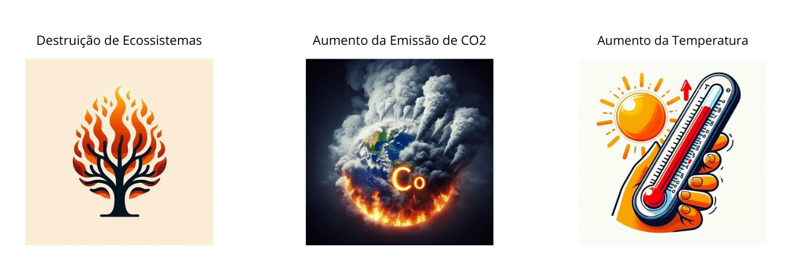

As queimadas são incêndios que ocorrem em áreas naturais, como florestas e vegetações. Elas podem ser
causadas por ações humanas, como a limpeza de terrenos para agricultura, ou por eventos naturais, como
raios. As consequências incluem danos ambientais, afetando a fauna e flora, e impactos sociais e econômicos,
prejudicando a saúde pública e a economia local. Prevenir queimadas é essencial para proteger o meio
ambiente e a sociedade.
Causas das Queimadas
1. Agricultura e Pecuária
Expansão Agrícola: A prática de desmatar áreas para o cultivo de commodities agrícolas, como soja e
milho, é uma das principais causas das queimadas. O fogo é frequentemente utilizado para limpar a
vegetação existente e preparar o solo para o plantio.
Pecuária Extensiva: A criação de gado em larga escala também contribui para as queimadas. Áreas de
floresta são queimadas para criar pastagens para o gado.
2. Despejo de Lixo
Queima de Resíduos: Em áreas rurais e urbanas, a queima de lixo é uma prática comum. Isso pode
facilmente sair de controle e causar incêndios maiores, especialmente em períodos de seca
3. Queimadas ilegais
Desmatamento Ilegal: A extração ilegal de madeira e a conversão de florestas em terras agrícolas ou
pastagens frequentemente envolvem queimadas ilegais. Essas atividades são realizadas sem controle e
fiscalização adequados, aumentando o risco de incêndios descontrolados
Consequências das Queimadas
Impactos Ambientais
As queimadas têm consequências devastadoras para o meio ambiente. Elas causam a destruição de habitats
naturais, levando à perda de biodiversidade, pois muitas espécies de plantas e animais são destruídas pelo
fogo. Além disso, as queimadas aumentam a emissão de dióxido de carbono na atmosfera, contribuindo para o
aquecimento global e mudanças climáticas

Impactos Sociais e Econômicos
As queimadas têm impactos sociais e econômicos significativos. Socialmente, a fumaça e a fuligem resultantes
das queimadas podem causar problemas de saúde, como infecções pulmonares, asma e até câncer, além de
irritação nos olhos
Economicamente, as queimadas afetam a agropecuária, destruindo lavouras e pastagens, o que reduz a oferta de
alimentos e eleva os preços. Além disso, os prejuízos financeiros podem ser bilionários, impactando
negativamente o mercado financeiro e a economia local
Prevenção e Combate
Medidas Preventivas
Para prevenir queimadas, é essencial adotar várias medidas que minimizem os riscos:
Evitar Jogar Bitucas de Cigarro no Chão: Descarte as bitucas de cigarro em locais apropriados, pois elas
podem iniciar incêndios em vegetações secas.
Não Soltar Balões: Soltar balões é ilegal e pode causar grandes incêndios florestais.
Não Fazer Fogueiras Próximas à Vegetação: Evite acender fogueiras em áreas com vegetação seca, pois elas
podem se espalhar rapidamente.
Descarte Correto de Lixo: Não queime lixo ou móveis. Descarte-os de forma adequada para evitar incêndios
acidentais.
Capinar e Molhar Terrenos: Mantenha áreas ao redor de sua propriedade limpas e úmidas para reduzir o risco
de propagação do fogo.
Recursos de Combate
Como Agir
Mantenha a Calma: Tente não entrar em pânico para tomar decisões racionais.
Chame Ajuda: Ligue imediatamente para o Corpo de Bombeiros (193) ou o Serviço de Atendimento Móvel de
Urgência (SAMU) (192).
Evacue a Área: Se possível, retire-se e ajude outras pessoas a saírem da área afetada.
Tente Conter Pequenos Focos: Se for seguro, tente abafar pequenas chamas com ramos ou terra, mas nunca
coloque sua vida em risco.
Proteja-se da Fumaça: Use máscaras ou panos úmidos para cobrir o nariz e a boca, e mantenha-se baixo para
evitar inalar fumaça.
Onde Buscar Ajuda
Corpo de Bombeiros (193): Para emergências de incêndio.
SAMU (192): Para atendimento médico de urgência.
Órgãos Ambientais Locais: Como o IBAMA e secretarias estaduais e municipais de meio ambiente.
Hospitais e Postos de Saúde: Procure atendimento médico imediatamente após os primeiros socorros